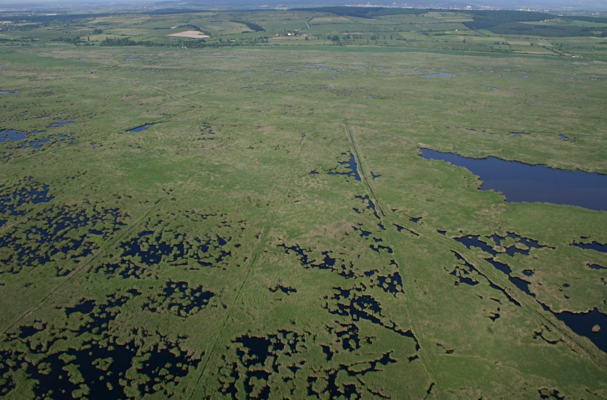

A Fertő-táj Magyarország és Ausztria közös világörökségi helyszíne. A tó nyugati partját szegélyező dombok a Soproni-hegység nyúlványai, de földtanilag a Kisalföldhöz tartoznak. Kétharmada Ausztriához, többi része Magyarországhoz tartozik. Az Adriát a Baltikummal összekötő kereskedelmi út mellett fekszik, ezért már 8000 évvel ezelőtt is kultúrák találkozási helye volt. Magyar oldalon a Fertő–Hanság Nemzeti Park és a fertődi Esterházy-kastély áll védelem alatt, míg osztrák oldalról több község mellett a Neusiedler és Seewinkel park tartoznak a helyszínhez. A tó körüli erdőirtás és lecsapolás után a gazdasági hasznosítás ellenére is sikerült a természetes élőhelyek megóvása. Az enyhén sós tavat teljes partvonalán nádas veszi körül, a körülötte lévő ingovány helyenként 3 kilométer széles. A korábbi korok emlékét régészeti lelőhelyek, ókori szentélyek maradványai, szőlőskertek és kastélyok őrzik. A falvakat a középkori szabad városok építészeti stílusában hozták létre. A tó halállománya gazdag, a különböző klímahatások következtében nemcsak a földrajzi, hanem állat-, és növényföldrajzi határok is találkoznak. A tó és a közvetlen környéke Közép-Európa legnagyobb madárrezervátuma. Számos költözőmadár fő vonulási útjában – pihenőhelyként – funkciónál. Többek között a szürke, vörös és kanalasgém, a nyári lúd, a vöcsök, a barna- és a rétihéja, a kis és a nagy kócsag fészkel itt.
